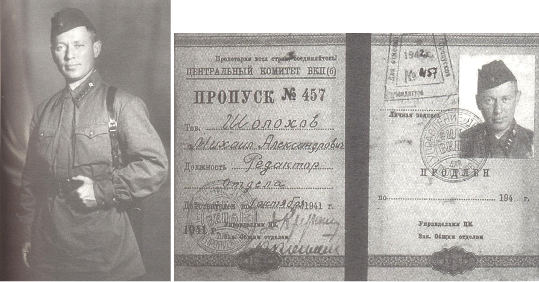
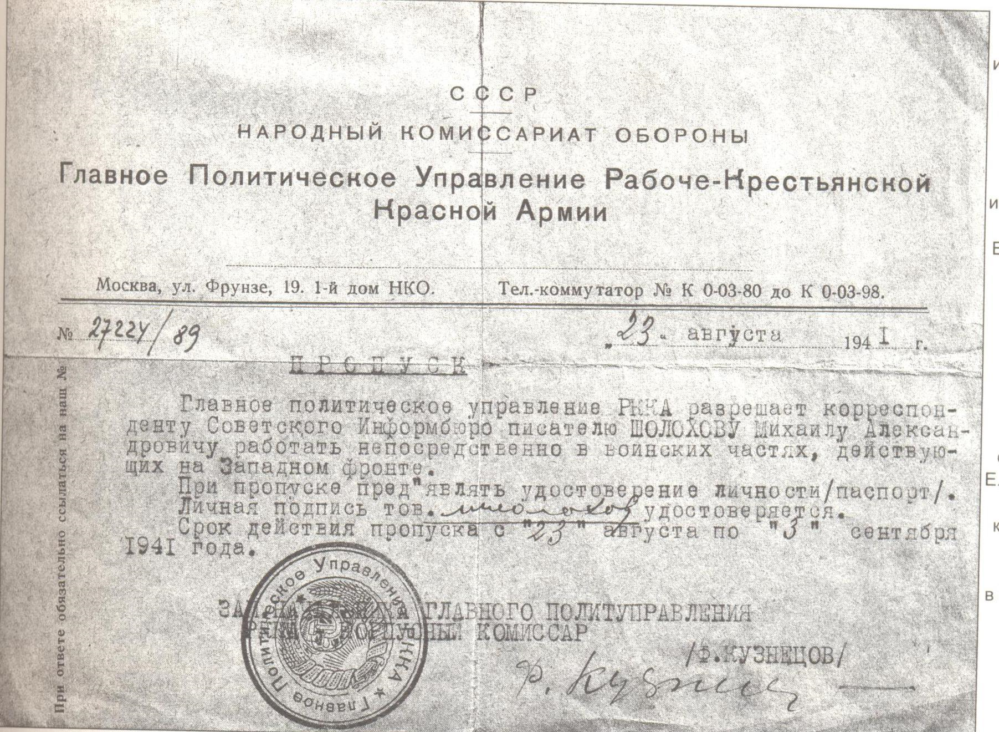
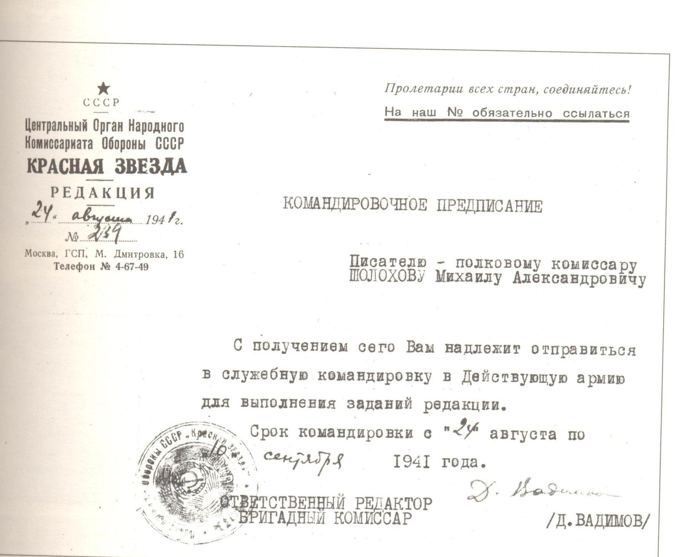
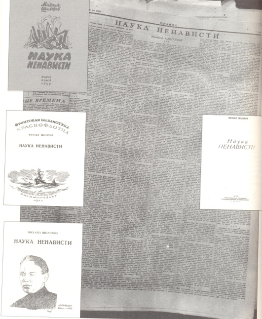
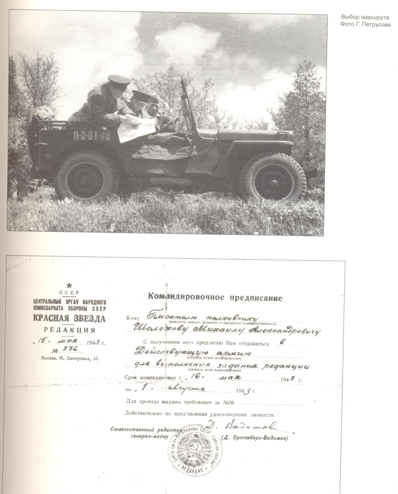
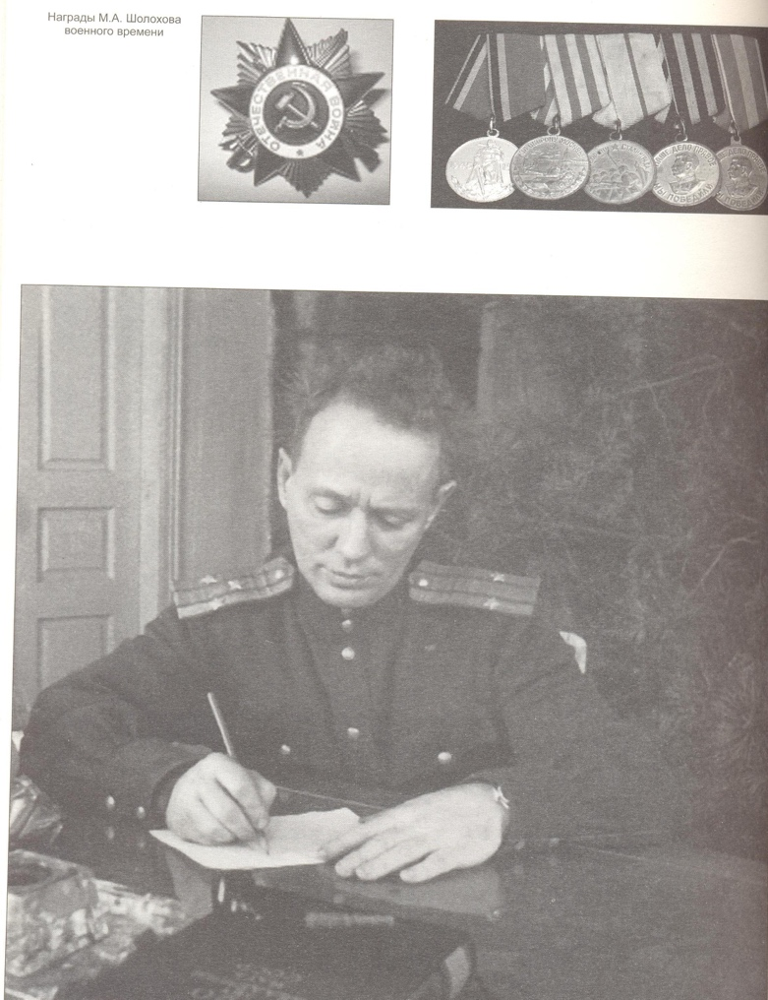
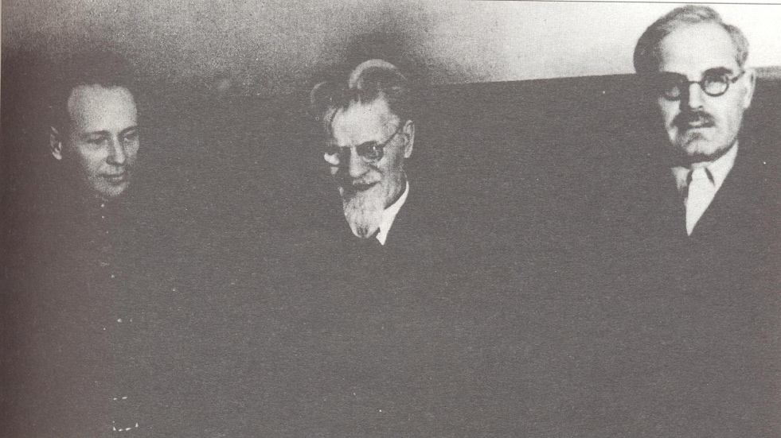
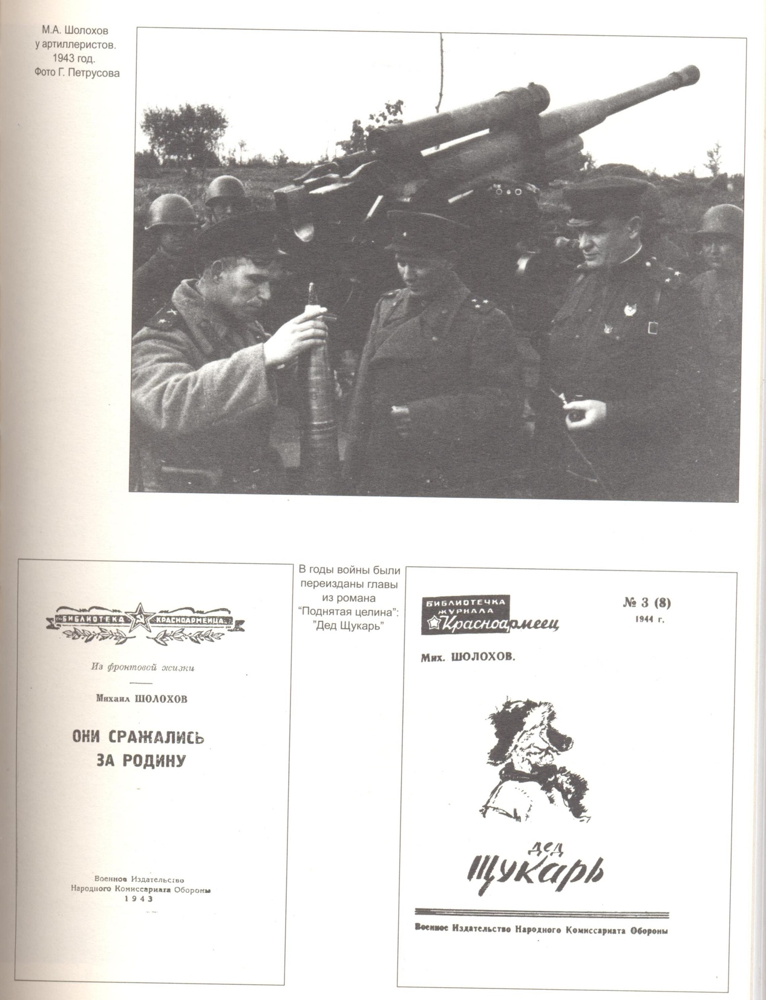
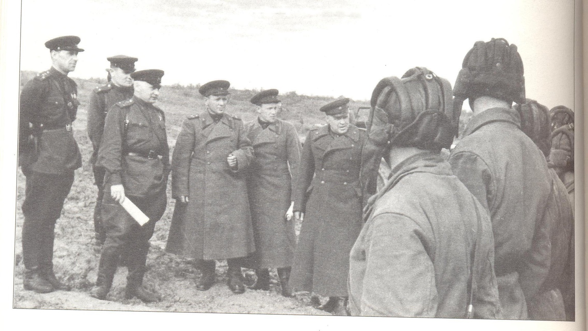
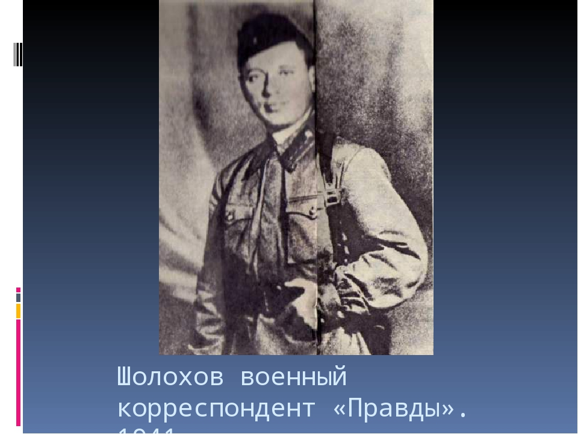

Шолохов в годы Великой Отечественной войны

Великая Отечественная война в жизни М.А.Шолохова
- Во время войны полковник М.А.Шолохов работал в Совинформбюро, был военным корреспондентом «Красной звезды» и «Правды; участвовал в боях под Смоленском (Западный фронт), на Волге, прошёл фронтовыми дорогами до границы с Германией, был под Кенигсбергом.
- Из автобиографии, написанной 5 апреля 1945г. : «…в армию призван в июле 1941г. в звании полкового комиссара» А потом, как он говорил, кочевал по фронтам в зависимости от обстановки и от того, куда пошлют.
23 июня 1941 года
М.А.Шолохов отправляет из Вёшенской срочную телеграмму Наркому Обороны СССР маршалу С.К.Тимошенко: «Дорогой товарищ Тимошенко! Прошу зачислить в фонд обороны СССР присужденную мне Сталинскую премию первой степени. По вашему зову в любой момент готов стать в ряды Рабоче- Крестьянской Красной Армии и до последней капли крови защищать социалистическую Родину…Полковой комиссар запаса РККА, писатель Михаил Шолохов»
24 июня 1941 года
Из обращения М.А.Шолохова к вёшенцам, идущим на фронт: «…Со времен татарского ига русский народ никогда не бывал побеждённым, и в этой Отечественной войне он непременно выйдет победителем… …Фашистским правителям, основательно позабывшим историю, стоило бы вспомнить о том, что в прошлом русский народ громил немецкие полчища, беспощадно пресекая их движение на восток и что ключи от Берлина уже бывали в руках русских военачальников. Но на этот раз мы их побьем так, как ещё никогда не бивали, и на штыках победоносной Красной Армии принесем свободу порабощенной Европе».
1941 год, конец августа-начало сентября
С командировочным предписанием №239 и пропуском №27224/89 полковой комиссар М.А.Шолохов вместе с бригадным комиссаром А.Фадеевым и старшим батальонным комиссаром Е.Петровым прибыл на Западный фронт, в расположение штаба 19-й армии, которой командовал Конев, в 229 дивизию генерала Козлова. В сосновых лесах восточнее деревни Вадино, в трех километрах от переднего края, во время боев под Духовщиной провел на боевых позициях несколько дней.
 1941- 1945 годы
М.А.Шолохов служил военным корреспондентом Совинформбюро, газет «Правда» и «Красная звезда»
(наряду с А.Толстым, И.Эренбургом, А.Платоновым, Е.Габриловичем, И.Кривицким). Демобилизовался в
декабре 1945 года.
Служба в действующей армии:
август-октябрь 1941 года — Западный
фронт;
октябрь-декабрь 1941 года — Южный фронт;
декабрь 1941-январь 1942 года —
Юго-Западный фронт;
январь-сентябрь 1942 года — Южный фронт;
сентябрь 1942-май 1943 года —
Сталинградский фронт;
май 1943-март 1945 года — Западный фронт;
март-май 1945 года — 3-й Белорусский
фронт.
Ноябрь 1941 года
«Не ждите лёгкой и быстрой победы. Войны хватит и на вас, готовьтесь к тому, чтобы встретить её мужественно. Война жестокая, кровавая, но не пугайтесь её. Победа будет за нами!»
Март 1942 года
В одной из бесед с друзьями писатель сказал: «Я обязан быть на фронте. Помните, что Некрасов сказал: «Поэтом можешь ты не быть, но гражданином быть обязан…»? Как гражданин считаю быть на фронте, все видеть своими глазами. Иначе не смогу писать о народе на войне…»
22 декабря 1942 года
Указом Президиума Верховного Совета СССР М.А.Шолохов награждён медалью «За оборону Сталинграда». Уд. Ф. №43 275
22 февраля 1943 года
В соответствии с Указом Президиума Верховного Совета Союза ССР от 9 октября 1942 г. и приказом Народного Комиссара Обороны №307 о присвоении политическому составу Красной Армии командных воинских званий, присвоить военное звание Шолохову Михаилу Александровичу- полковому комиссару- спец. Корреспонденту «Красной звезды»- подполковник.
Март 1943 года
М.А.Шолохов- представителю ВОКС: «Я считаю, что мой долг, долг русского писателя – это идти по горячим следам своего народа в его гигантской борьбе против иноземного владычества создать произведения исключительно такого исторического значения, как и сама борьба… Если уж нам, русским писателям, выйти на поле боя, то мы должны ударить тяжёлой артиллерией нашего искусства. Я знаю, создание такого крупного произведения потребует времени, и тяжёлая артиллерия может прийти к огню, когда враг уже будет разбит, но я тороплюсь, работаю напряженно и много».
Июнь- июль 1944 года
Вручение генералом Д.Ортенбургом полковнику М.А.Шолохову медали «За оборону Москвы» в конференц- зале редакции газеты «Красная звезда».
11 марта 1943 года
Приказ №01774/п о присвоении М.А.Шолохову воинского звания полковник.
9 мая 1945 года
Указом Президиума Верховного Совета СССР М.А.Шолохов награжден медалью «За победу над Германией в ВОВ 1941- 1945гг.» Уд. № 00 068 066

6 июня 1945 года
Указом Президиума Верховного Совета СССР от 6 июня 1945 г. награжден медалью «За доблестный труд в ВОВ 1941-1945гг.» Уд. Д№ 325 795
23 сентября 1945 года
Указ Президиума Верховного Совета СССР о награждении М.А.Шолохова орденом Отечественной войны 1-й степени за заслуги в годы Великой Отечественной войны, за патриотическую работу в печати в период ВОВ и в связи с выходом 10 000 номера газеты «Правда». 1945г. После вручения М.А.Шолохову ордена Отечественной войны I ст.
18 декабря 1945 года
М.А.Шолохов демобилизован из рядов Советской Армии в воинском звании полковника. Военный билет Р-43 522 М.А.Шолохов с группой офицеров во время осмотра военной техники. 1943г.
В гостях у разведчиков. М.А.Шолохов, подполковник И.И.Панов, генерал В.А.Глуздовский. 1943г.
М.А.Шолохов и корр. «Правды» К.В.Потапов. 1943г.
